Banco de Imagens - Física em Resumos
PADRÃO
Arquivos externos
FÍGURA 1: Prensa hidráulica, com embolo de área menor à esquerda, e maior à direita.

Fonte: Olivier Cleynen, CC0, via Wikimedia Commons


Arquivos internos
DESCRIÇÃO DA IMAGEM.

Fonte: criado pelo autor.
Imagens
Este arquivo reúne todas as imagens citadas nos arquivos .org do projeto, organizadas por tema, no padrão acima.
Ferramentas e matemática básica


Visualização de 1 litro, 1 centilitro, 1 mililitro e 1 microlitro (e a massa aproximada de água correspondente).

Fonte: Cmglee, CC BY-SA 4.0, via Wikimedia Commons


Cinemática
Descrição do movimento de carros a partir de um referencial, em um certo instante de tempo \(t_0\).

Fonte: criado pelo autor.
Descrição do movimento de carros a partir de um referencial, em um instante posterior (final) \(t_f\).

Fonte: criado pelo autor.
Variação de velocidade entre os instantes \(t_0 = 5\,s\) e \(t_f = 15\,s\).

Fonte: criado pelo autor.
Variação de velocidade entre dois instantes (gráfico velocidade × tempo).
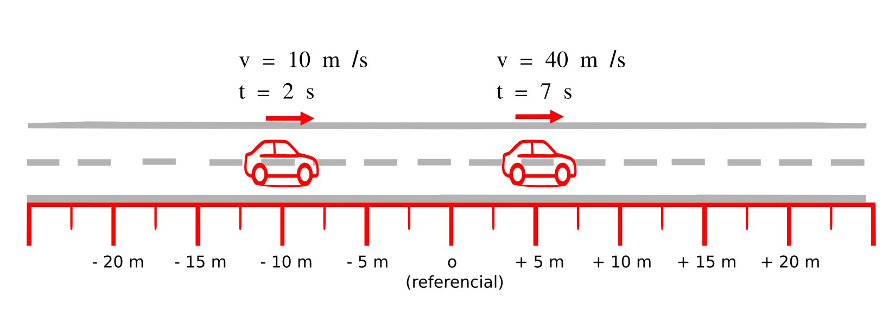
Fonte: criado pelo autor.
Queda livre de um objeto a 5 m.

Fonte: criado pelo autor.
Lançamento com velocidade horizontal de 5 m/s.

Fonte: criado pelo autor.
O movimento pode ser diferente para dois observadores diferentes.

Fonte: criado pelo autor.
O mesmo movimento visto de referenciais diferentes.
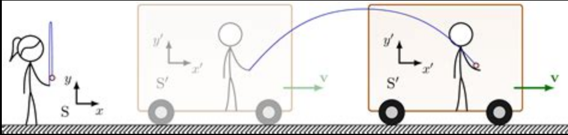
Fonte: criado pelo autor.
Gráfico que relaciona a velocidade com o tempo de dois corpos.
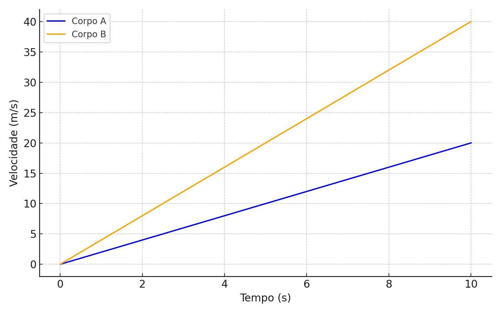
Fonte: criado pelo autor.
FIGURA 1: Movimento de uma aranhinha em linha reta e com velocidade constante.

Fonte: criado pelo autor.
FIGURA 2: Movimento de uma baratinha em linha reta e com velocidade constante.

Fonte: criado pelo autor.
FIGURA 3A: Queda livre a partir do repouso (\(v_0 = 0\)). A seta indica o sentido positivo da trajetória (para cima).

Fonte: criado pelo autor.
FIGURA 3B: Lançamento vertical para cima (\(v_0 > 0\)). A seta indica o sentido positivo da trajetória (para cima).

Fonte: criado pelo autor.
Gráfico que relaciona os valores de massa e volume de uma substância.
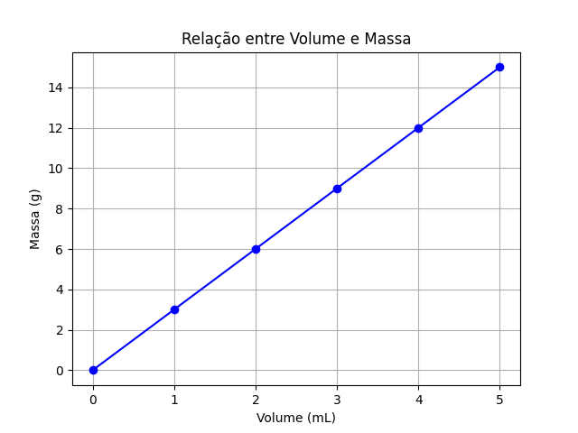
Fonte: criado pelo autor.
Gráfico de distância em quilômetros por tempo em horas.
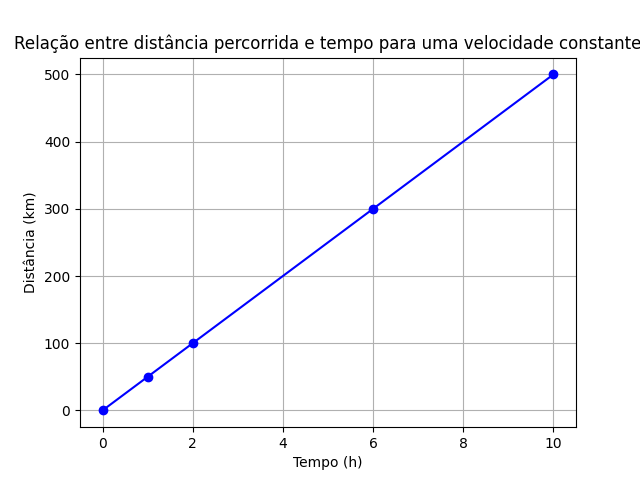
Fonte: criado pelo autor.
Trabalho e energia
Skatista em uma pista em U: conversão entre energia potencial e cinética.
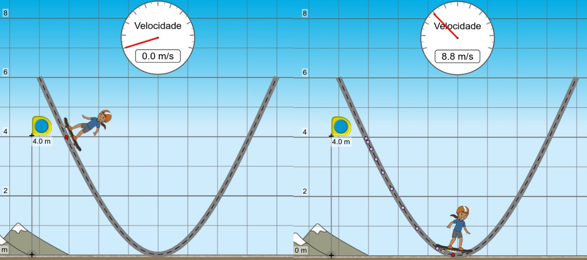
Fonte: imagem criada pelo autor usando a simulação Energy Skate Park (PhET).
Leis de Newton e dinâmica

Quando a bicicleta freia, a pessoa tende a continuar o movimento em linha reta (1ª lei de Newton).

Fonte: criado pelo autor.
A aceleração é proporcional à força aplicada e inversamente proporcional à massa do objeto (2ª lei de Newton).

Fonte: criado pelo autor.
A força resultante é o resultado líquido de todas as forças atuantes.

Fonte: criado pelo autor.
Gráfico relacionando força e aceleração de dois corpos.
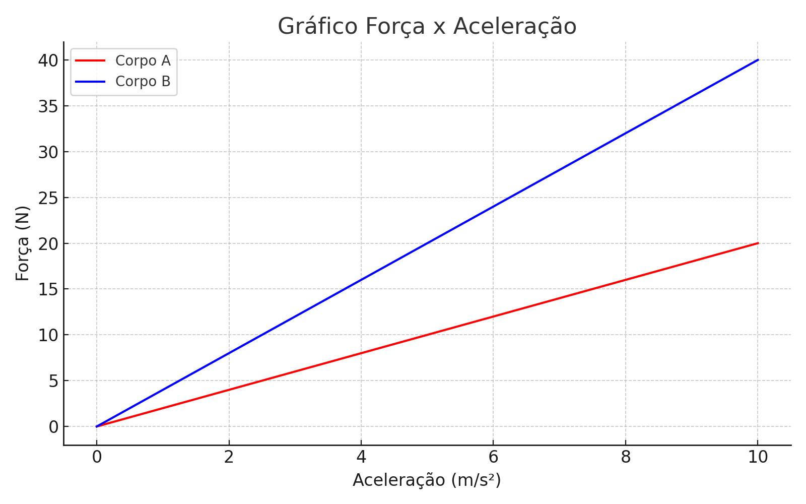
Fonte: criado pelo autor.
Exemplos de força: tração, magnética e gravitacional.

Fonte: Penubag / Arnaud Ramey, Domínio público, via Wikimedia Commons


A força de resistência do ar sustenta um paraquedas, por exemplo.

Fonte: Pearson Scott Foresman, Domínio público, via Wikimedia Commons


Força normal – diagrama de forças em plano inclinado.

Fonte: Wikimedia Commons, CC BY-SA 4.0, via Wikimedia Commons


Efeito da inércia: se a força for suave, a corda de cima se rompe; se for abrupta, a corda de baixo se rompe.

Fonte: MikeRun, CC BY-SA 4.0, via Wikimedia Commons


Quem está dentro de um automóvel que faz uma curva sente uma força para fora da curva.

Fonte: Thilp, CC0, via Wikimedia Commons


Por que Stephen Hawking está flutuando?

Fonte: Jim Campbell/Aero-News Network, CC BY 3.0, via Wikimedia Commons


Par ação-reação quando uma pessoa empurra outra.

Fonte: MikeRun, CC BY-SA 4.0, via Wikimedia Commons


Força gerando aceleração.

Fonte: PhET Interactive Simulations: Forces And Motion Basics, University of Colorado Boulder, CC BY 4.0.
Força gerando aceleração, mas em superfície com atrito.

Fonte: PhET Interactive Simulations: Forces And Motion Basics, University of Colorado Boulder, CC BY 4.0.
Massa e velocidade.

Fonte: PhET Interactive Simulations: Forces And Motion Basics, University of Colorado Boulder, CC BY 4.0.
Gravitação e forças à distância
Par ação-reação em forças de ação à distância (Lei da Gravitação Universal).

Fonte: Svjo, CC BY-SA 4.0, via Wikimedia Commons


Força entre duas massas à 3,0 km de distância.

Fonte: criado pelo autor a partir da simulação Gravity Force Lab: Basics (PhET).
Força entre duas massas à 6,0 km de distância.

Fonte: criado pelo autor a partir da simulação Gravity Force Lab: Basics (PhET).
Ilustração do Pêndulo de Foucault.

Fonte: DemonDeLuxe (Dominique Toussaint), CC BY-SA 3.0, via Wikimedia Commons


Hidrostática e fluidos

Exemplo de como um mesmo objeto (mesma força peso) pode exercer diferentes valores de pressão.

Fonte: すじにくシチュー, CC0, via Wikimedia Commons


Prensa hidráulica: ao aplicar uma força \(F_1\) no lado esquerdo, resulta uma força maior \(F_2\) no lado direito.
Fonte: Olivier Cleynen, CC0, via Wikimedia Commons


Barco flutuando em um rio: o peso do barco é sustentado pela força de empuxo.

Fonte: Wikimedia Commons, CC BY-SA 4.0, via Wikimedia Commons


Pelo princípio de Arquimedes, o objeto sofre uma força de empuxo igual ao peso do fluido deslocado.

Fonte: Wikimedia Commons, CC BY-SA 4.0, via Wikimedia Commons


A pressão em um fluido se deve ao peso desse fluido e depende da profundidade.

Fonte: Wikimedia Commons, CC BY-SA 4.0, via Wikimedia Commons


Termologia

Representação da temperatura de um gás ideal.

Fonte: A. Greg (Greg L), Domínio público, via Wikimedia Commons


Representação da vibração dos átomos em uma molécula devido à temperatura (proteína alfa-hélice).

Fonte: Wikimedia Commons, CC BY-SA 3.0, via Wikimedia Commons


Comparação entre as principais escalas de temperatura.

Fonte: Mjmauler, CC BY-SA 4.0, via Wikimedia Commons


Representação da convecção, com o fluido aquecido subindo e o frio descendo.

Fonte: Oni Lukos, CC BY-SA 3.0, via Wikimedia Commons


Um dissipador de calor proporciona uma grande área de superfície para convecção, otimizando a transferência de calor.

Fonte: FxJ, Domínio público, via Wikimedia Commons


O espectro eletromagnético em função da temperatura de emissão.

Fonte: Khemis, CC BY-SA 4.0, via Wikimedia Commons


Ilustração da dilatação superficial de um corpo.

Fonte: MikeRun, CC BY-SA 4.0, via Wikimedia Commons


Ilustração da dilatação volumétrica de um corpo.

Fonte: MikeRun, CC BY-SA 4.0, via Wikimedia Commons


Gráfico da temperatura da água em função do calor fornecido (com as mudanças de fase).

Fonte: Przygocki, CC BY-SA 4.0, via Wikimedia Commons


Ondas e movimento periódico
Um pêndulo simples é um exemplo de movimento periódico.

Fonte: Stündle (modificação Ideophagous), CC BY-SA 4.0, via Wikimedia Commons


Comparação entre uma onda numa corda e um movimento periódico.

Fonte: Evil saltine, Domínio público, via Wikimedia Commons


O movimento de um satélite em órbita pode ser um exemplo de movimento circular uniforme.

Fonte: MikeRun, CC BY-SA 4.0, via Wikimedia Commons


Ondas longitudinais (direção de propagação paralela à oscilação) em uma mola.

Fonte: OpenStax College, CC BY-SA 4.0, via Wikimedia Commons


Ondas transversais (direções de propagação e oscilação perpendiculares) em uma mola.

Fonte: OpenStax College, CC BY-SA 4.0, via Wikimedia Commons


Reflexões possíveis de uma onda em uma corda: extremidade livre e extremidade fixa.

Fonte: And1mu, CC BY-SA 4.0, via Wikimedia Commons


Reflexão de uma onda, com representação dos ângulos de incidência e reflexão.

Fonte: MikeRun, CC BY-SA 4.0, via Wikimedia Commons


Transmissão com refração: do meio menos denso para o meio mais denso.

Fonte: Ulflund, CC0, via Wikimedia Commons


Reflexão e transmissão em uma interface (do meio menos denso para o mais denso).

Fonte: Oleg Alexandrov, Domínio público, via Wikimedia Commons


Reflexão e transmissão (com refração) em uma interface, com os ângulos de incidência e refração.

Fonte: MikeRun, CC BY-SA 4.0, via Wikimedia Commons


Ondas bidimensionais estacionárias, por exemplo na pele de um tambor – modo fundamental de vibração.

Fonte: Oleg Alexandrov, Domínio público, via Wikimedia Commons


Ondas bidimensionais estacionárias, por exemplo na pele de um tambor – segundo modo de vibração.

Fonte: Oleg Alexandrov, Domínio público, via Wikimedia Commons


Óptica
Ilustração da dispersão da luz em um prisma.

Fonte: Lucas Vieira, Domínio público, via Wikimedia Commons


Ilustração de onda eletromagnética (espectro atômico).

Fonte: News Official World, CC BY-SA 4.0, via Wikimedia Commons


Eletrostática
Linhas de campo e equipotenciais em um capacitor de placas paralelas.

Fonte: Paulagf27, CC BY-SA 4.0, via Wikimedia Commons


Força elétrica entre dois objetos a 4 cm de distância.
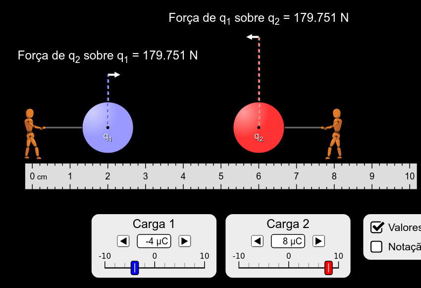
Fonte: criado pelo autor a partir da simulação Coulomb's Law (PhET).
Força elétrica entre dois objetos a 2 cm de distância.

Fonte: criado pelo autor a partir da simulação Coulomb's Law (PhET).
Eletrodinâmica
Representação de uma corrente elétrica com cargas se movendo.

Fonte: And1mu, CC BY-SA 4.0, via Wikimedia Commons


Analogia sobre a relação entre resistência \(\Omega\), tensão \(V\) e corrente \(A\) (Lei de Ohm).

Fonte: Elilopes, CC BY-SA 4.0, via Wikimedia Commons


Circuito simples com bateria de 9 V e lâmpada incandescente.
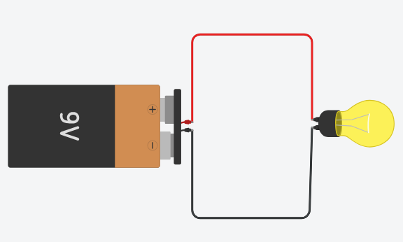
Fonte: imagem criada pelo autor no Autodesk Tinkercad.
Medições de tensão elétrica e corrente elétrica em um circuito simples.
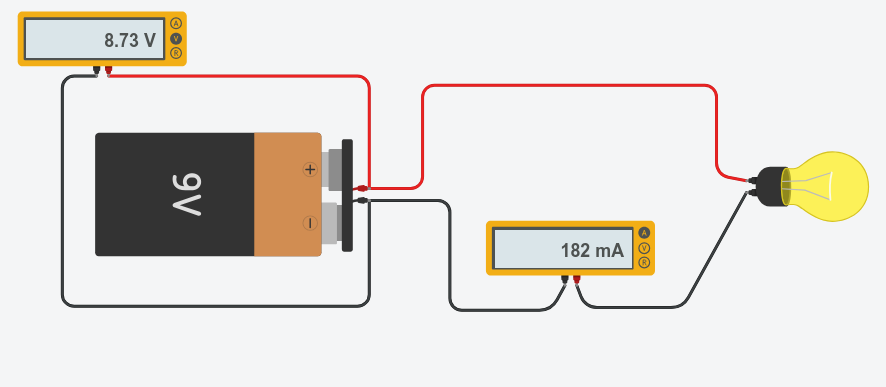
Fonte: imagem criada pelo autor no Autodesk Tinkercad.
Ligações em série e paralelo de uma bateria e duas lâmpadas.

Fonte: imagem criada pelo autor no Autodesk Tinkercad.
Exemplo de resistor ôhmico (constante de proporcionalidade \(R = 5\,\Omega\)).
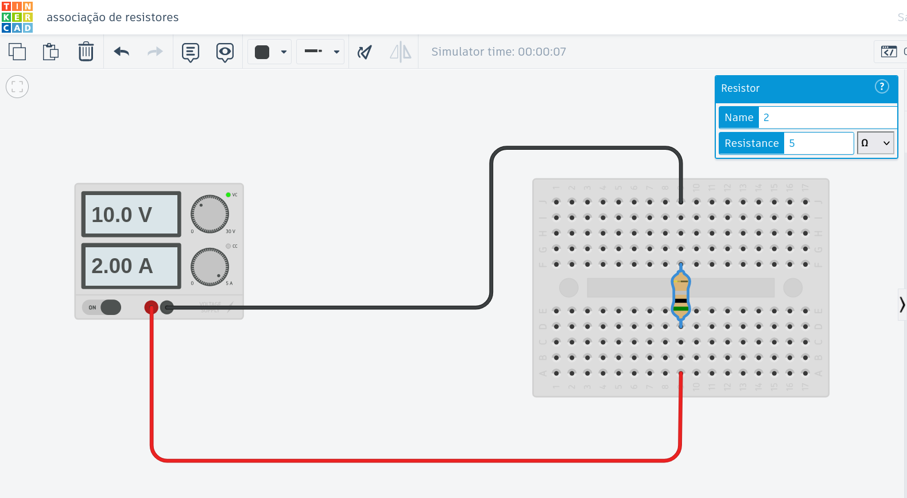
Fonte: imagem criada pelo autor no Autodesk Tinkercad.
Ligação de dois resistores de \(5\,\Omega\) em série.

Fonte: imagem criada pelo autor no Autodesk Tinkercad.
Ligação de dois resistores de \(5\,\Omega\) em paralelo.

Fonte: imagem criada pelo autor no Autodesk Tinkercad.
Gráfico: tensão elétrica e resistência de um condutor.
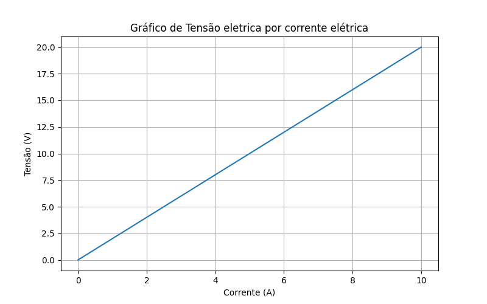
Fonte: criado pelo autor.
Resistores \(R_1\) e \(R_2\) em série.
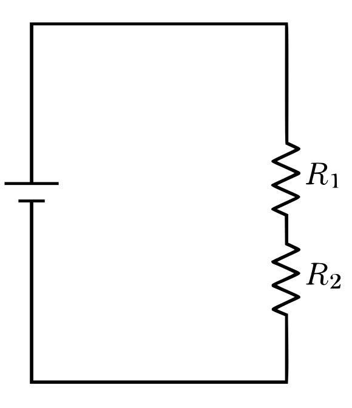
Fonte: criado pelo autor.
Resistores \(R_1\) e \(R_2\) em paralelo.
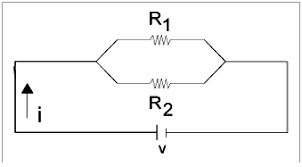
Fonte: criado pelo autor.
Simulação com capacitor de placas paralelas.
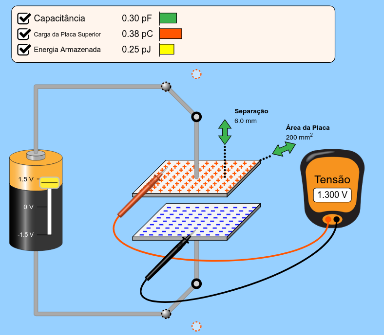
Fonte: imagem criada pelo autor usando a plataforma PhET Interactive Simulations.
Associação de resistores (em série e em paralelo).

Fonte: imagem criada pelo autor usando a plataforma Projeto no Autodesk Tinkercad.
Eletrônica

Diodo emissor de luz (LED) – fotografia.

Fonte: Wikimedia Commons, CC BY-SA 3.0, via Wikimedia Commons


Diodo emissor de luz (LED) – símbolo esquemático.

Fonte: Wikimedia Commons, CC BY-SA 3.0, via Wikimedia Commons


Simulação de controle de LED com Arduino.
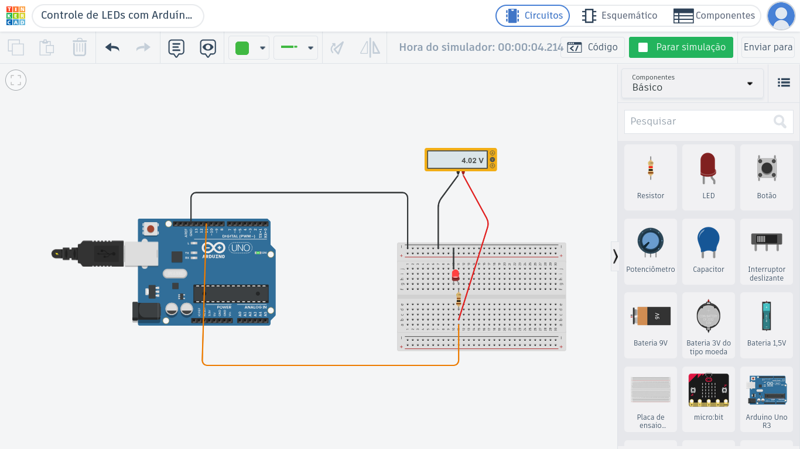
Fonte: imagem criada pelo autor usando a plataforma Autodesk Tinkercad.
Programação de controle de LED com Arduino.
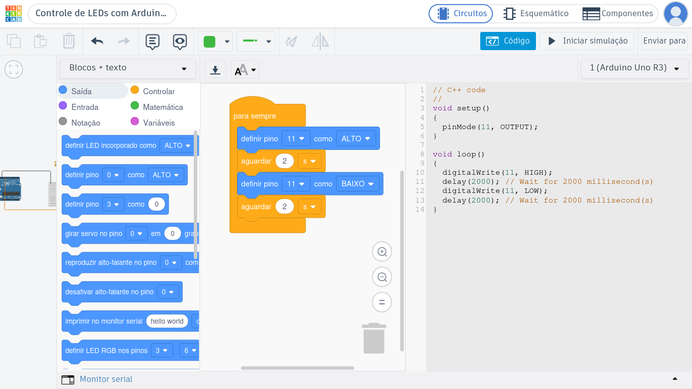
Fonte: imagem criada pelo autor usando a plataforma Autodesk Tinkercad.
Magnetismo
Interação entre bússola e ímã permanente.
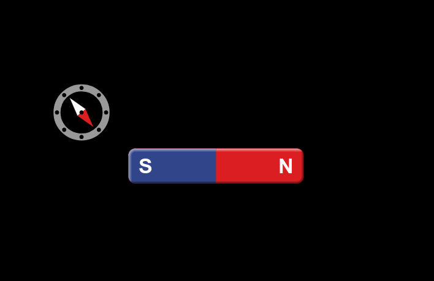
Fonte: criado pelo autor a partir da simulação Ímã e Bússola (PhET).
Visualização do campo magnético com várias bússolas.
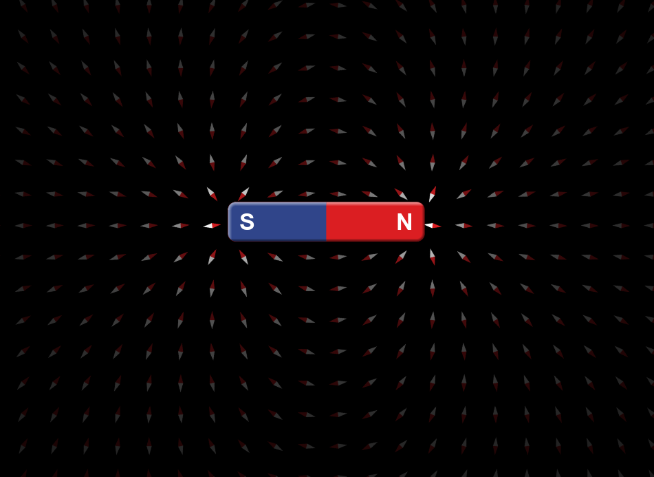
Fonte: criado pelo autor a partir da simulação Ímã e Bússola (PhET).
Bobina ligada a uma pilha.

Fonte: criado pelo autor.
Campo magnético de um ímã permanente.

Fonte: criado pelo autor.
Bobina com 2 voltas – campo magnético medido: \(B\).

Fonte: criado pelo autor.
Bobina com 4 voltas – campo magnético medido: \(2B\).

Fonte: criado pelo autor.


.png){kind=link}


Questões de provas
Questão 5 – SIS/UEA 2014 (carga elétrica).
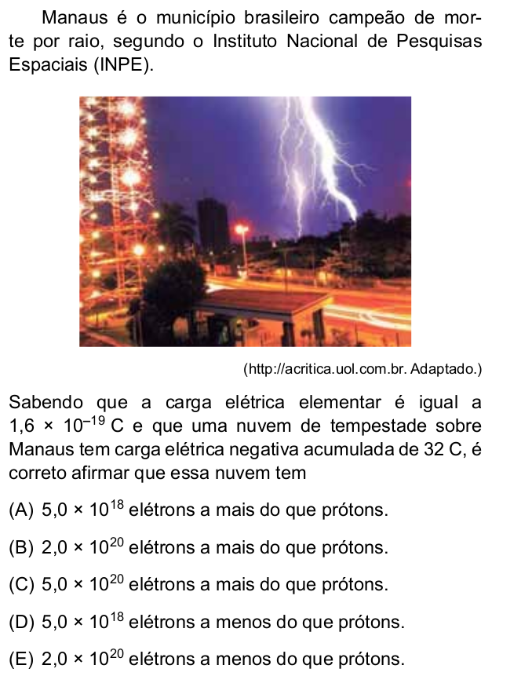
Fonte: criado pelo autor.
Questão 3 – SIS/UEA 2018 (eletrização).

Fonte: criado pelo autor.
Questão 4 – SIS/UEA 2016 (eletrização).

Fonte: criado pelo autor.
Questão 5 – SIS/UEA 2014 (eletrização).

Fonte: criado pelo autor.
Questão 6 – SIS/UEA 2019 (eletrização).
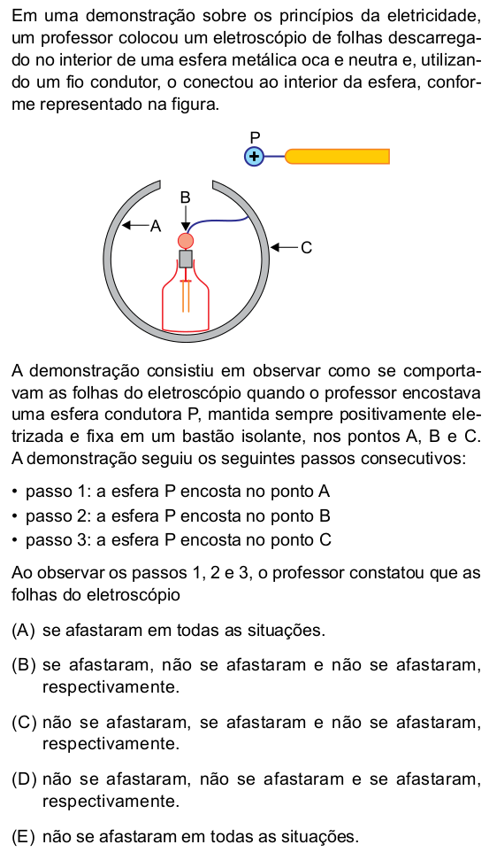
Fonte: criado pelo autor.
Questão 3 – UEA/SIS 2016 (força elétrica).
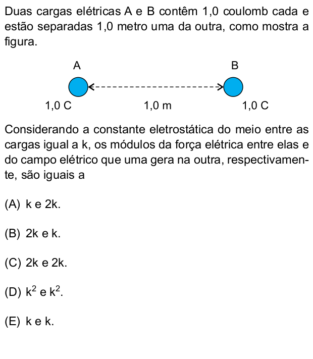
Fonte: criado pelo autor.
Questão 4 – UEA/SIS 2019 (força elétrica, parte 1).

Fonte: criado pelo autor.
Questão 4 – UEA/SIS 2019 (força elétrica, parte 2).
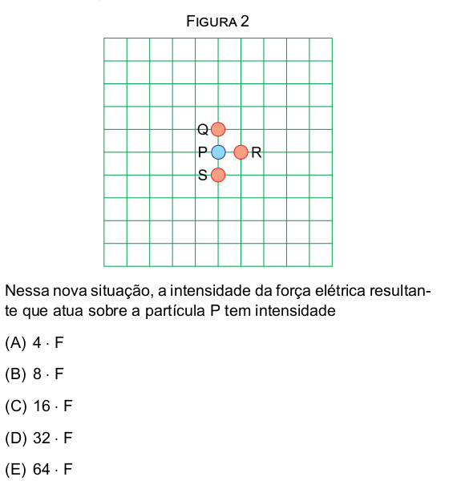
Fonte: criado pelo autor.
Questão 1 – PSC-3-2023.
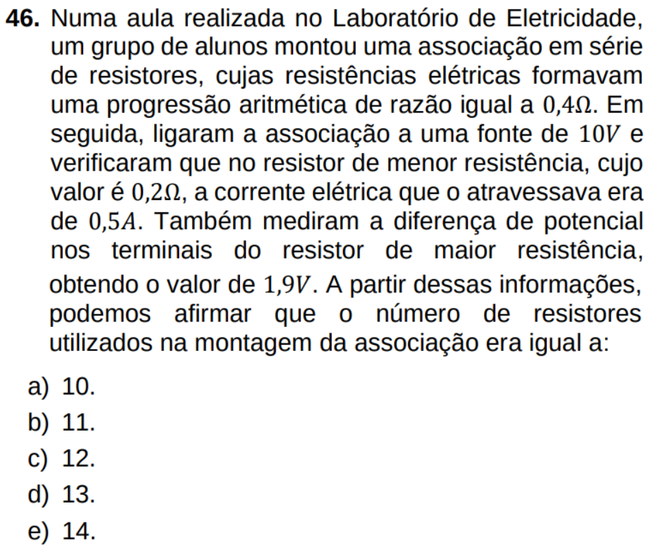
Fonte: criado pelo autor.
Questão 2 – PSC-3-2023.
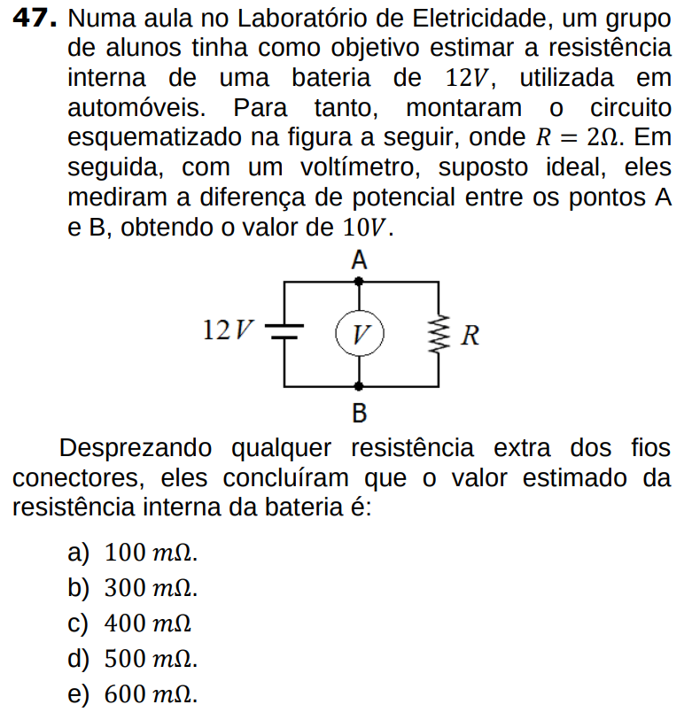
Fonte: criado pelo autor.
Questão 3 – SIS2-2024.
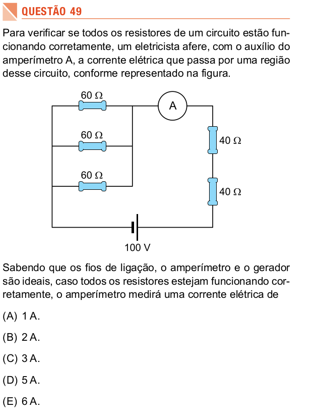
Fonte: criado pelo autor.
Questão 4 – OBF-2023 (circuito com lâmpadas).
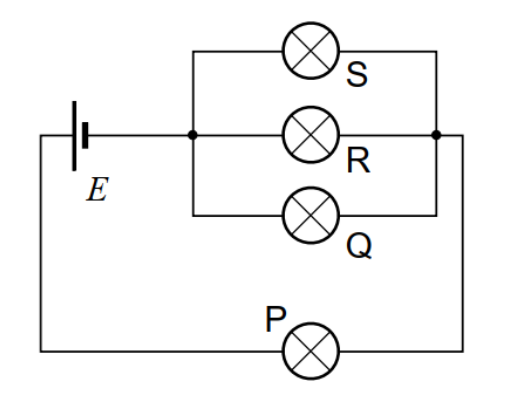
Fonte: criado pelo autor.
Questão 50 – SIS1/UEA 2016.
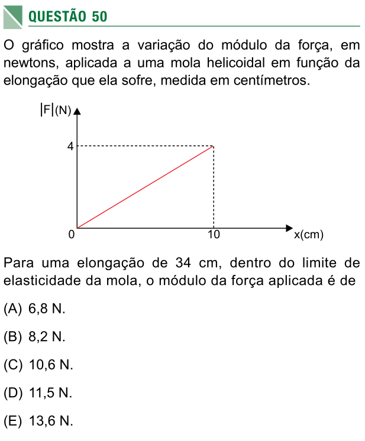
Fonte: criado pelo autor.
Questão 45 – SIS1/UEA 2018.
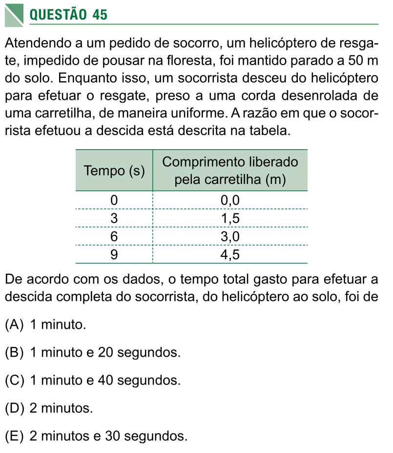
Fonte: criado pelo autor.
Questão 50 – SIS/UEA 2017.
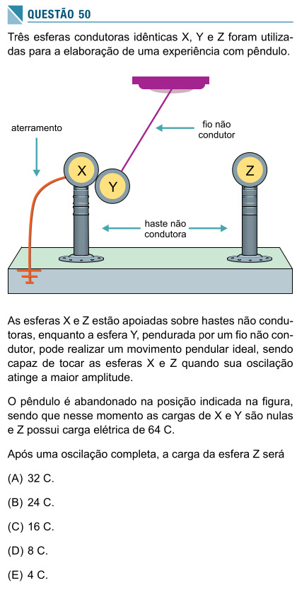
Fonte: criado pelo autor.
Logos
Logo do Instituto Federal do Amazonas (IFAM).
Fonte: criado pelo autor.